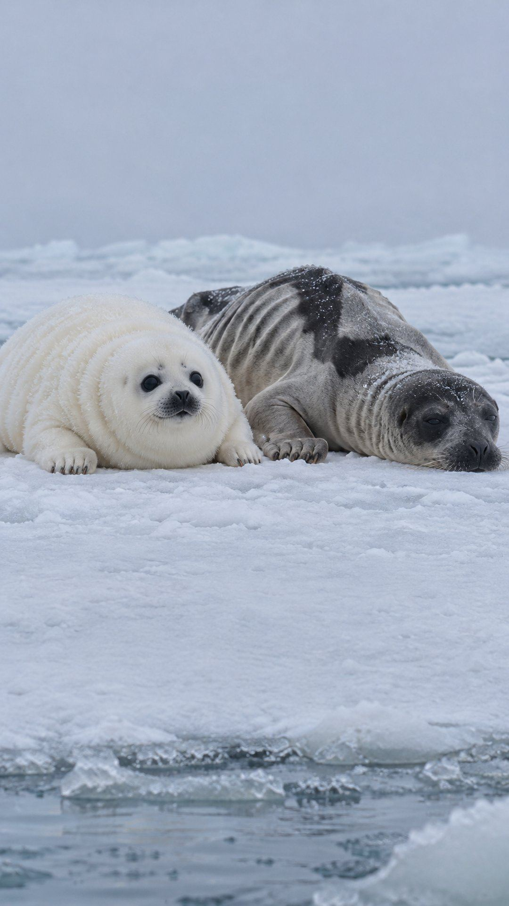
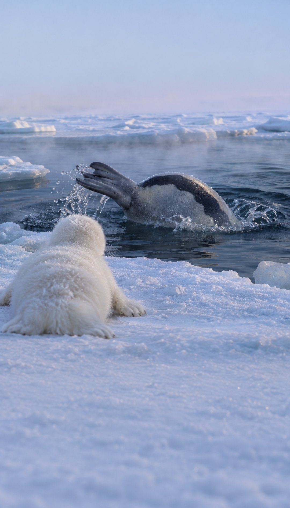
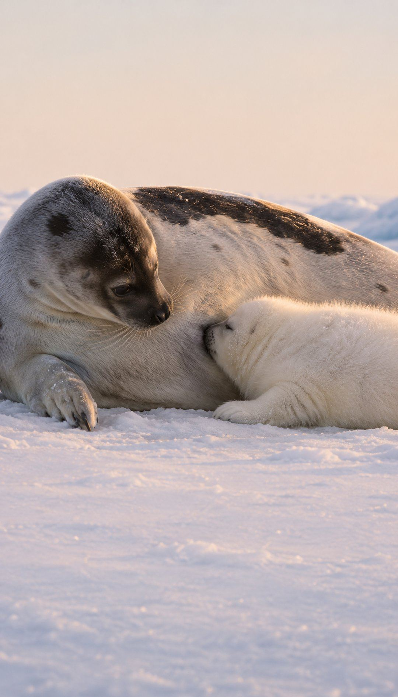
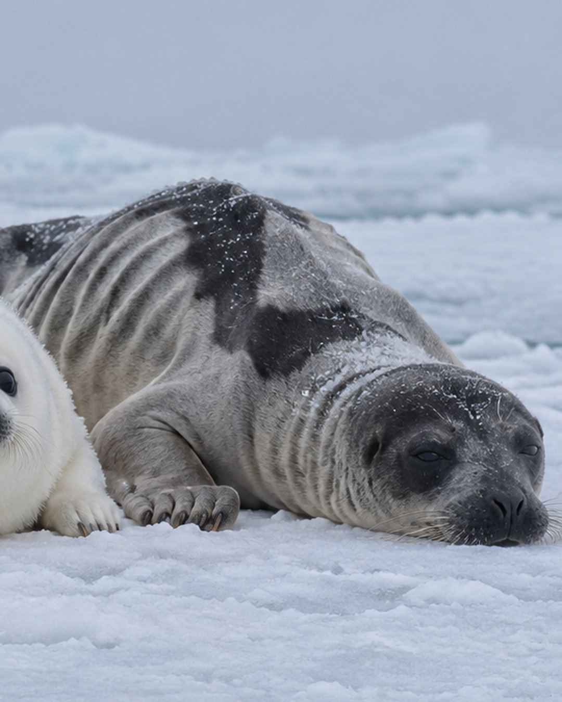
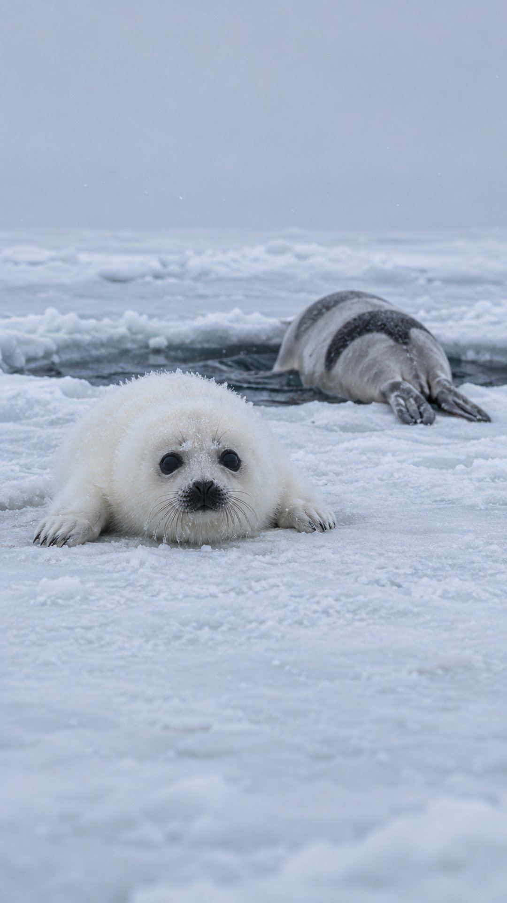
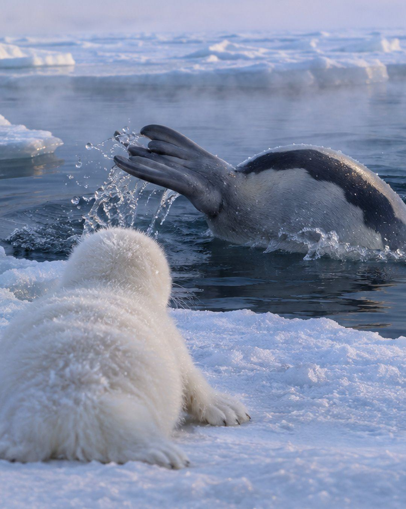
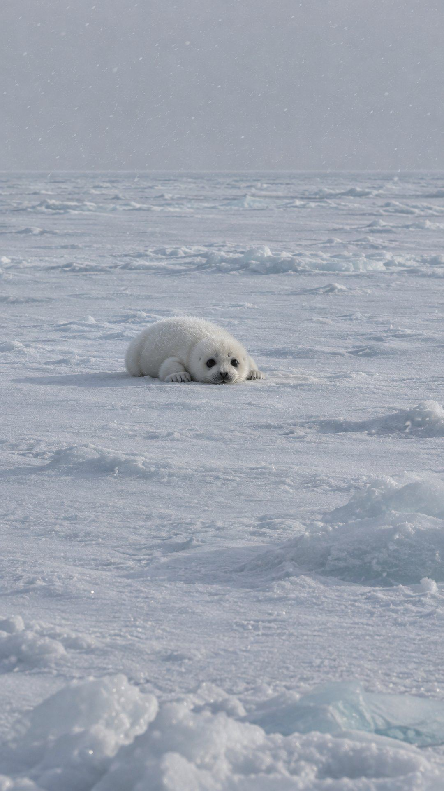
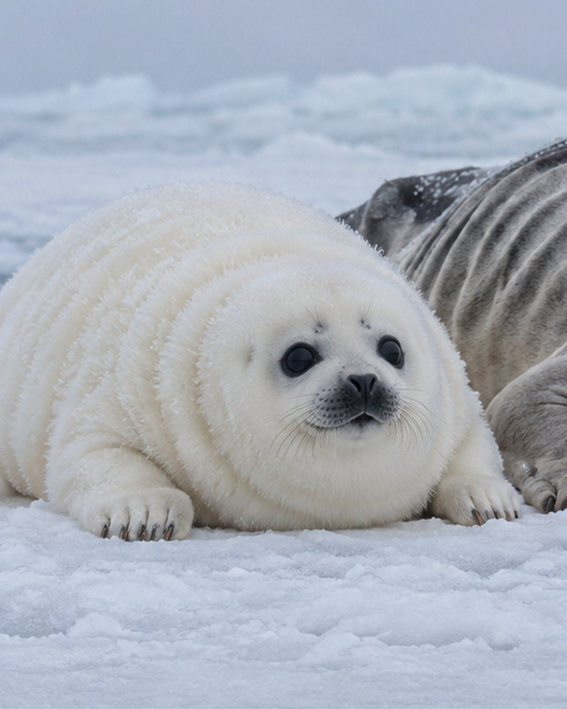
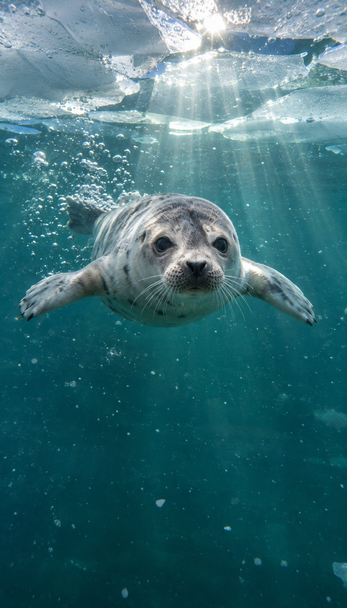
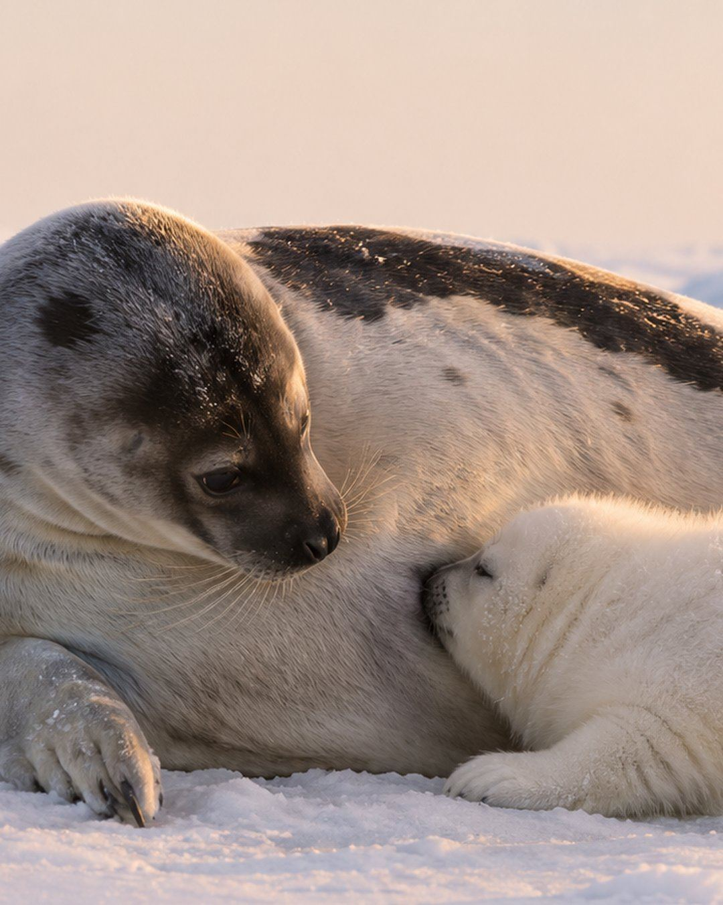

This mother starves for her baby
This mother starves for her baby.

Then she leaves it forever.

For twelve days, the mother feeds the baby, and eats nothing at all.

The baby gets fat and round.
The mother gets thinner every day.

Then one morning, the mother slips into the sea.

And never comes back.

The baby waits alone on the ice.
Six weeks, with no food.

But the baby doesn’t starve.
The fat from mom’s milk keeps it alive.

Then one day, the baby slides into the sea, and swims away alone.

Sometimes love means giving everything, then letting go.

Based on a true story: what harp seal mothers do on the sea ice of the North Atlantic. The pictures are AI-made to show what happens. Facts: NOAA Fisheries.